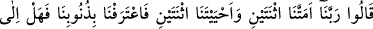
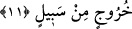

Dost, yüzü düşmana dönük olan sana, nâdiren bakar.
Eğer faydalı dost istiyorsan onun düşmanından emir almayacaksın.
Senin evinde düşmanını gördükten sonra
Dostun oraya ayak basmaz, bunu bilmiyor musun?
Allah Teâlâ’nın inkâra gazab edişi ezelidir. Ancak bu öylesine gizlidir ki kâfirden
inkâr sudûr edinceye kadar izi ortaya çıkmaz. O ilâhî gazap aynı zamanda ebedîdir.
Çünkü dünyanın sona erip gitmesiyle kesintiye uğramaz. Bu bakımdan inkârcı hem
dünyada hem de âhirette dâimâ gazaba uğramış olur. Allah’ın hışmının kulunun
hışmından daha büyük olması ise, kulun hışmının Allah’ın hışmından kaynaklanıyor
olmasındandır. Zira, şayet Allah kâfiri suçu yüzünden yakalayıp cezâlandırmayacak
olsaydı, kul hiç de kendine karşı hışım duymayacaktı. Ayrıca, en büyük nimetler O’nun
rızâsının birer neticesi olduğu gibi, en şiddetli cezâlar da Allah’ın kullarına duyduğu
gazap ve öfkenin birer neticesidir. İşte bir inkârcı âhirette Rabbinin kendisine öfkeli
olduğunu bilirse, hiçbir şey onun gönlüne bundan daha ağır gelemez. Üstelik ne
kendisine fayda sağlayacak bir mızırdanma ne de içinde bulunduğu berbat durumu
savuşturup yok edecek bir zenginliği söz konusudur. Yalvarıp yakarmalarına kulak
verilmeyeceği gibi, hiçbir kurtuluş ümidi de yoktur. Cenab-ı Hak’tan af ve ihsânını
isteriz. Kendisi dışındaki varlıklar karşısında bize O yeter!
11. Onlar: Rabbimiz, bizi iki defa öldürdün, iki defa dirilttin. Biz de günahlarımızı
itiraf ettik. Bir daha (bu ateşten) çıkmaya yol var mıdır? derler.
Bu hitâbı duyan kâfirler: “Rabbimiz! derler, Bizi iki defa” iki ölümle “öldürdün, iki
defa” iki diriltişle “dirilttin.” Bu iki diriltiş ve öldürüşün mâhiyeti hakkında birkaç
görüş vardır:
1- Kâşifî’nin et-Tibyân’dan naklen belirttiği şu görüştür: Böğründen çıkarttığı ve
mîsak aldığı Âdem neslini öldürdü. Birinci öldürüş budur. Rahimde nutfe halinde iken
diriltti. Sonra dünyada öldürdü ve âhirette diriltti.
“Biz de” bu sebeple “günahlarımızı”, özellikle de ölümden sonra dirilişi inkâr
ettiğimizi, “itiraf” ve ikrar “ettik.” yâni peygamberler bizleri Allah’a ve âhiret gününe
îman etmeye çağırdılar. Oysa bizler tıpkı Dehrîler gibi ölümden sonra hayat
bulunmadığına inandığımız için onların dâvetlerine iltifat etmedik ve ölünceye kadar bu
boş inanç üzere yaşamaya devam ettik. Ancak işte, şu anda diriltilmiş bulunuyoruz. Şu
an, dünyada iken inkâr ettiğimiz ölüm sonrası hayatın olduğunu açıkça gördük. Bu